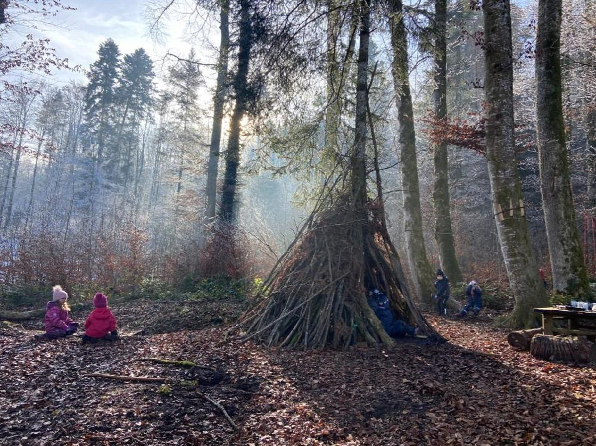

Spielgruppe
Die Waldspielgruppe "Purzelbaum" gibt Kindern ab drei Jahren (nach Rücksprache auch ab 2.5 Jahren) bis zum Ende des Frühkindergartens die Möglichkeit,
in einer Gruppe von max. zwölf Kindern, beim Freispiel ihre Persönlichkeit zu entwickeln,
in Pfützen zu stampfen, über Baumstämme zu balancieren, zu singen, zu werken, neue Freundschaften zu schliessen und eine
unbeschwerte Zeit zu verbringen.
Die meiste Zeit verbringen wir im schönen, märchenhaften Wald von Ermensee. Sollte dies wetterbedingt
(Sturm, extreme Kälte, Hagel...) nicht möglich sein, werden Änderungen spätestens am Vortag mitgeteilt.
Die Waldspielgruppe bietet alles was Kinder brauchen:
- Gesunde, frische Waldluft.
- Viel Bewegung.
- Riesiger Spiel- und Lebensraum für Aktivitäten.
- Freies, ungezwungenes Spiel.
- Kontakte zu anderen Kindern - soziales Verhalten will gelernt sein.
- Regelmässigkeit und Verlässlichkeit des Zusammenkommens.
- Geschütze Umgebung um eine sanfte Ablösung von den Eltern zu üben.
- Fruchtbare Basis für das spätere Lernen in der Schule.
- Förderung der Selbst-, Sozial- und Sachkompetenz.
Was bietet die Spielgruppe den Eltern?
- Kurzzeitige Entlastung.
- Kontakt zu anderen Eltern.
- Neutrale Perspektive auf Ihr Kind.
- Empfehlung von Fachstellen.
